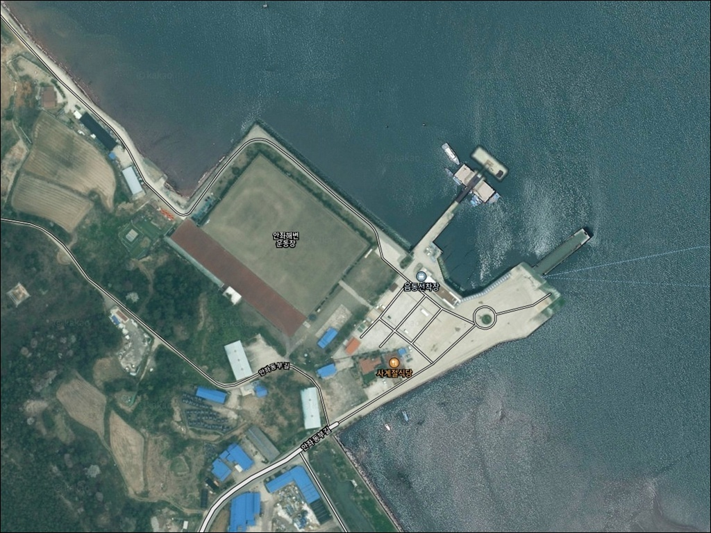
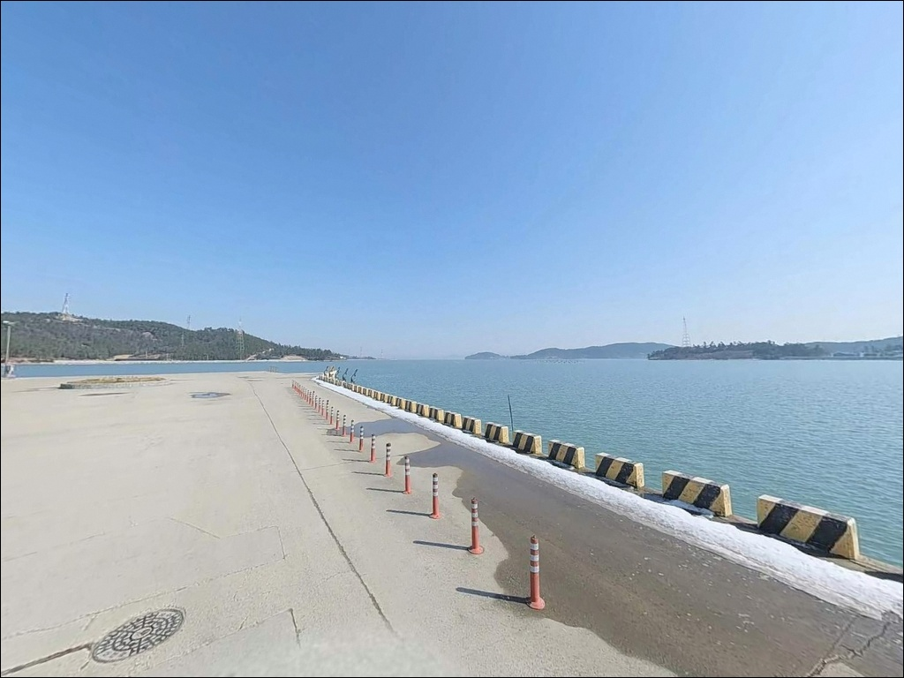
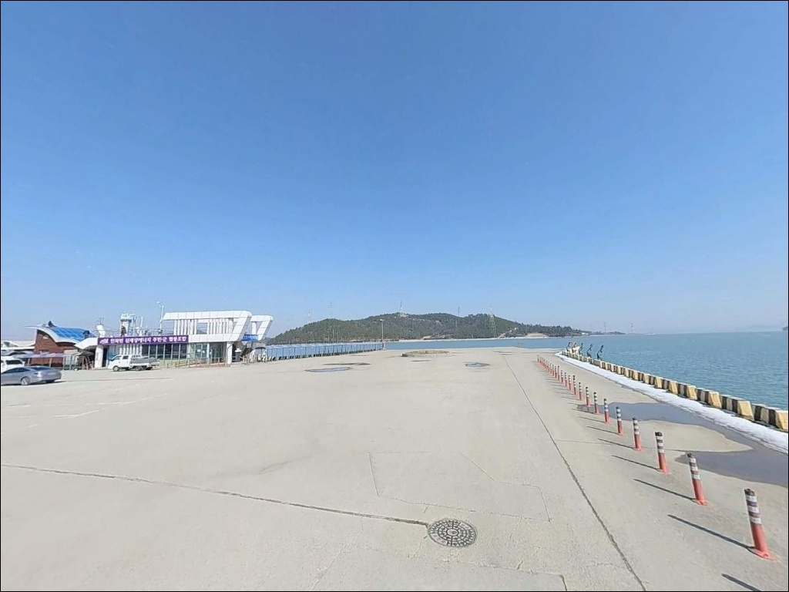
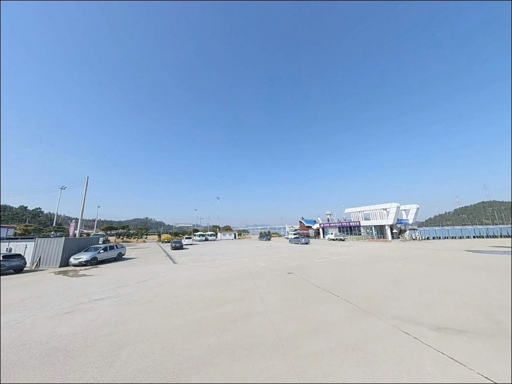
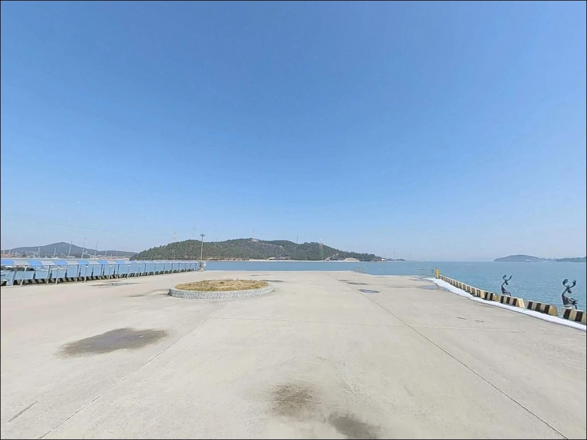
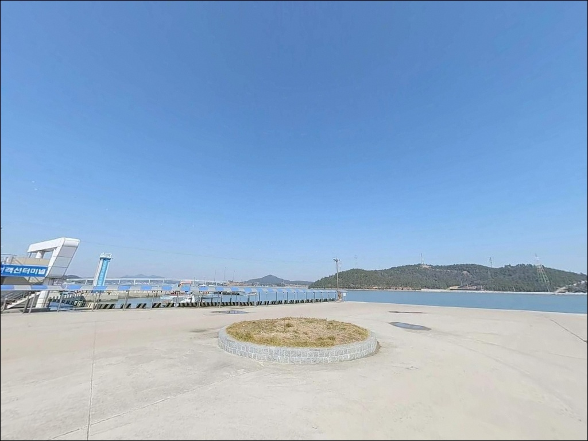
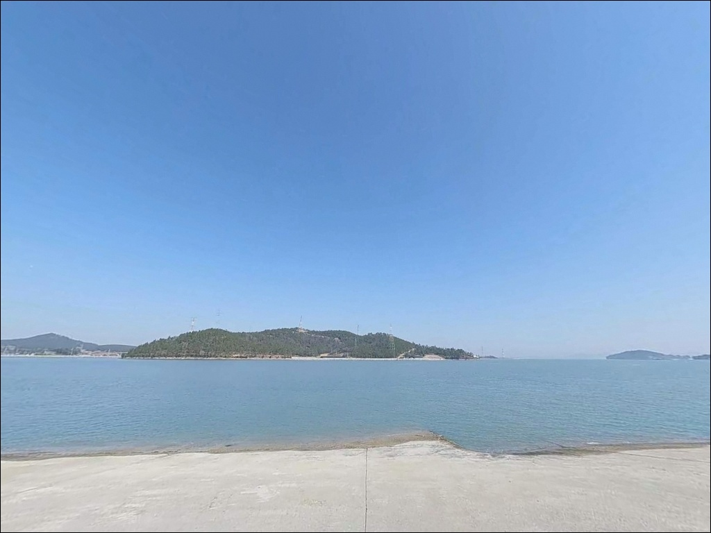
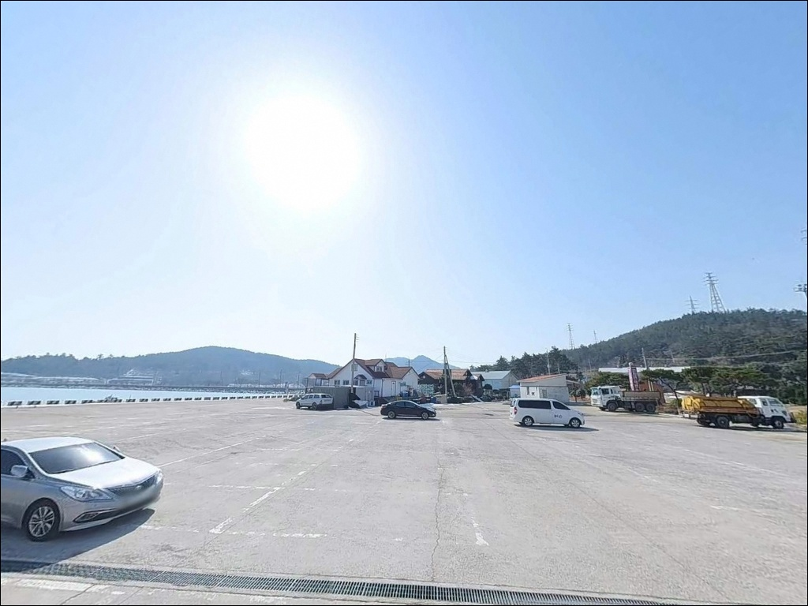
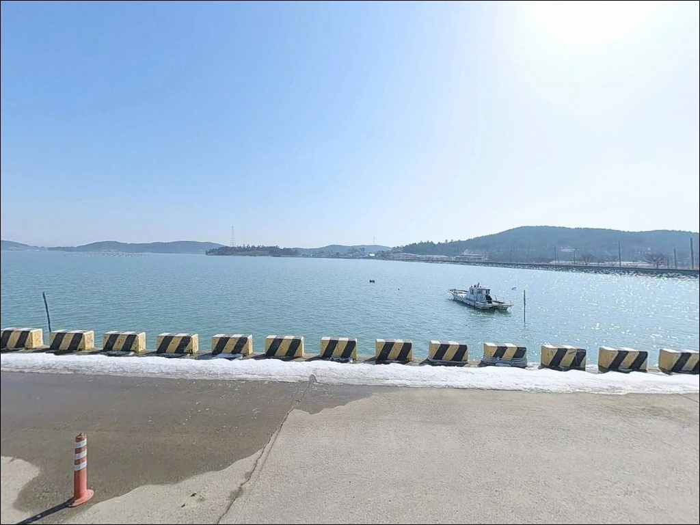

읍동선착장, 전남 신안군 한적한 분위기 속 차박, 낚시를 함께 하기 좋은 곳
이 페이지에는 광고(제휴 링크 포함)가 있으며, 광고 링크를 통해 구매하면 운영자가 판매 수익 또는 수수료를 받을 수 있습니다. 포인트 사진: 카카오맵 스카이뷰·로드뷰. 이 페이지의 지도·사진 이미지는 카카오맵의 실제 서비스 이미지와 다를 수 있습니다.


포인트 안내
읍동선착장
전남 신안군 안좌면 읍동리 333-26
물때 확인 없이 읍동선착장에 도착하면
선착장 앞 해면이 갯벌로 변한 상태를
마주하게 됩니다.
서해 다도해 특성상 간조 시 수심이 급격히 낮아지는 이 포인트는,
만조 전후 타이밍을 맞추지 않으면
어떤 채비로도 접근이 어려운 구조입니다.
이 사실을 모르고 출발 시각을 잡으면
낚시 자리 자체가 사라집니다.
안좌도와 팔금도 사이 수로를 품은
읍동선착장은 신안군 안좌면의 행정 중심지에 자리한
여객선 취항 항포구입니다.
수심 4~6m 수준의 수로형 지형과
조류 흐름이 결합된 이곳은
에깅과 원투낚시 복합 공략이 가능한
서해 남단 선착장 포인트입니다.
이 글은
읍동선착장의 진입 환경, 물때 판단 기준,
낚시 방식별 공략 조건, 차박 여건에 집중합니다.
조황 단정이나 특정 어종 보장은
이 글의 범위에 포함되지 않습니다.

1. 진입 동선과 포인트 접근성
천사대교 개통 이후 육로로 안좌도까지
차량 진입이 가능해졌습니다.
목포 방면에서 출발하면 압해도, 암태도, 팔금도를 거쳐
805번 지방도를 타고 읍동리까지 이어지는 경로가
기본 동선입니다.
읍동리는 안좌면의 행정 중심지로,
진입로는 포장된 마을 중심 도로 수준입니다.
주차는 여객터미널 인근 공터를
활용하는 방식이 일반적이나,
여객선 출도착 시간대에는 승객 차량과
주차 공간이 겹칠 수 있어
운항 일정을 미리 확인하고 여유 시간을 두는 편이 좋습니다.
소형~중형 차량은 진입에 큰 어려움이 없는 편이며,
대형 캠핑카나 장비 차량이라면
여객터미널 광장 쪽 회차 가능 여부를
위성지도로 사전에 확인하고 출발하는 것이
안전합니다.

2. 차박 환경과 야간 체류 여건
읍동선착장 주변은 안좌면 중심지 특성상
야간에도 터미널 대합실과 마을 가로등이
일정 수준의 조명을 만들어 줍니다.
완전한 암흑 환경은 아니지만,
민가와 상업시설이 가까워
프라이버시는 제한적인 편입니다.
낚시 후 하룻밤 머무는 용도로는
편의시설 접근성이 좋다는 점이 이점이지만,
여객선 운항이 있는 낮 시간대 차량 통행과
마을 생활 소음을 감안하면
조용한 독립 차박보다는
낚시 거점 숙박 성격이 강한 포인트입니다.
방파제와 선착장 일부 구간은
야간 조명이 충분하지 않을 수 있으므로
헤드랜턴을 반드시 지참해야 합니다.
습기와 이끼로 인한 미끄러움도
야간에 더 주의가 필요한 요소입니다.


3. 주변 편의시설 및 인프라 현황
읍동리는 안좌면의 행정 중심지인 만큼
기본 인프라가 갖춰진 편입니다.
안좌면사무소, 안좌우체국,
한국전력공사 신안지사가 읍동리에 위치하며,
안좌농협 하나로마트와 인근 식당이
선착장 반경 내에서 이용 가능합니다.
응급 상황 발생 시 읍동리 소재 119안전센터가
가장 가까운 대응 기관입니다.
섬 지역 특성상 큰 병원까지 이동하려면
시간이 걸리는 구조이므로,
비상약품과 상비품은 출발 전 충분히
챙기는 것이 기본 준비입니다.

4. 출조 전 반드시 확인해야 할 조건들
읍동선착장 방문 전 가장 먼저 챙겨야 할 것은
물때입니다.
서해 다도해 특성상 간조 시에는
선착장 앞 해면이 갯벌로 변해
낚시 자체가 어려운 상황이 됩니다.
바다타임에서 읍동리 인근 물때를 확인하고,
만조 전후 2시간을 기준으로
도착 시각을 맞추는 것이 기본 전략입니다.
수로형 지형 특성상 조류가 강해지는 시점에는
봉돌 무게를 올리는 방식이
채비 흘림을 줄이는 데 유효합니다.
여객선 취항 수로 인근에서는
선박 항로 방향으로 채비를 던지지 않는 것이
기본 안전 매너이며, 현장에서 반드시 지켜야 합니다.
섬 지역 기상 변화는 빠른 편이므로
기상청 예보를 당일 출발 직전 다시 한번 확인합니다.
구명조끼 착용은 필수이며,
야간 낚시 시에는 미끄럼 방지 신발과
헤드랜턴을 반드시 준비해야 합니다.

5. 수로 지형이 만드는 낚시 여건 분석
읍동선착장은 안좌도와 팔금도 사이
좁은 수로에 자리한 선착장 구조입니다.
수로 폭이 좁아 밀물과 썰물 때 조류 소통이
활발하게 이루어지는 편이며,
수심은 4~6m 수준으로
선착장 끝단과 수로 방향으로
깊어지는 구조가 기본 지형입니다.
선착장 외측은 조류 영향을 직접 받는 구간이 형성되며,
이 구간이 루어와 에깅 채비가
힘을 발휘할 수 있는 조건입니다.
내항 방향은 상대적으로 잔잔한 수면을 형성해
찌낚시 운용에 유리한 편입니다.
서해 신안 다도해 수계는
주변 양식장과 수중 구조물이
어류 서식 환경을 만드는 구조입니다.
만조 전후 조류가 살아나는 타이밍이
입질 확률을 높이는 조건이 됩니다.
최신 조황은 출조 전에 꼭 검색해 보시기 바랍니다.


6. 포인트에 어울리는 낚시 스타일
이 포인트에서 여름~가을 시즌에
가장 많이 시도되는 낚시는 무늬오징어 에깅입니다.
안좌도 일대 다도해 수계는
에깅 시즌에 무늬오징어 회유가 이루어지는 권역이며,
수로 조류 흐름이 에기 채비에
자연스러운 움직임을 만들어 주는 구조입니다.
원투낚시는 만조 전후 조류가 움직이는 타이밍에
선착장 끝단 외측이나 수로 방향으로
채비를 보내는 방식이 어울립니다.
들물 타이밍에 조류를 따라
감성돔과 숭어가 이동하는 구간이 생기며,
이 타이밍 원투낚시가
이 포인트에서 유효한 공략법입니다.
루어낚시는 야간 선착장 조명 주변에서
농어를 타겟으로 시도해볼 수 있습니다.
미노우나 지그헤드 계열 채비로
수로 방향을 천천히 탐색하는 방식이
이 포인트 구조에 맞습니다.
찌낚시는 내항 쪽 잔잔한 구간에서
숭어를 대상으로 만조 시간대에 운용하는 것이
기본 접근법입니다.

7. 대안 포인트와 플랜 B 동선
읍동선착장이 여객선 운항으로 혼잡하거나
물때가 맞지 않을 때는
복호여객터미널 방파제가 첫 번째 대안입니다.
안좌도 남단에 위치해 이동 거리가 짧고,
읍동선착장 대비 외해 노출도가 높은 편이라
조류 흐름이 더 살아있는 구간이 있습니다.
안좌도 북부에 위치한 북지선착장도
탐색해볼 만한 대안 포인트입니다.
읍동선착장과 동일한 안좌도 해안선을 공유하므로
어종 패턴이 유사하게 형성되는 편이며,
인적이 적어 차박 프라이버시
측면에서 유리한 구간이 있습니다.
안좌도 내 대체 포인트가 여의치 않다면
팔금도 방향으로 이동해
팔금도 해안 방파제를 탐색하는 동선도
이 권역에서 운용할 수 있는
플랜 B 경로입니다.

물때를 알면 읍동선착장이 달리 보입니다
에깅이나 원투낚시로 서해 신안 다도해 수계를
탐색하고 싶은 낚시인이라면
읍동선착장은 충분히 시도해볼 만한 포인트입니다.
수심 4~6m의 수로 지형과
조류가 만드는 변화 구간이
복합 낚시 스타일에 잘 맞는 구조를 갖추고 있습니다.
다만 만조 전후 타이밍을 놓치고 도착하거나,
여객선 운항 시간대에 진입하면
주차와 낚시 자리 모두 어려워집니다.
물때 확인, 여객선 시간표 체크,
채비 여유분 준비,
이 세 가지를 갖추고 간다면
의외의 조과를 기대해볼 수 있는
안좌도의 숨은 포인트입니다.
안좌면 중심지라 편의시설 접근은 편리하지만,
조용한 독립 차박보다는 낚시 베이스캠프 성격이 강합니다.
천사대교를 건너 다도해 수로 지형을
직접 확인하고 싶은 낚시인이라면,
물때 하나 잘 맞춰 읍동선착장까지
발품을 팔아볼 만한 곳입니다.